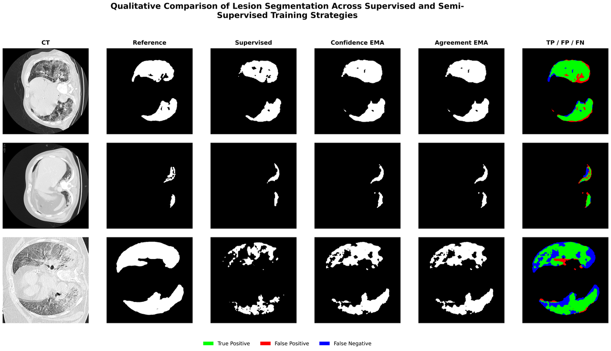
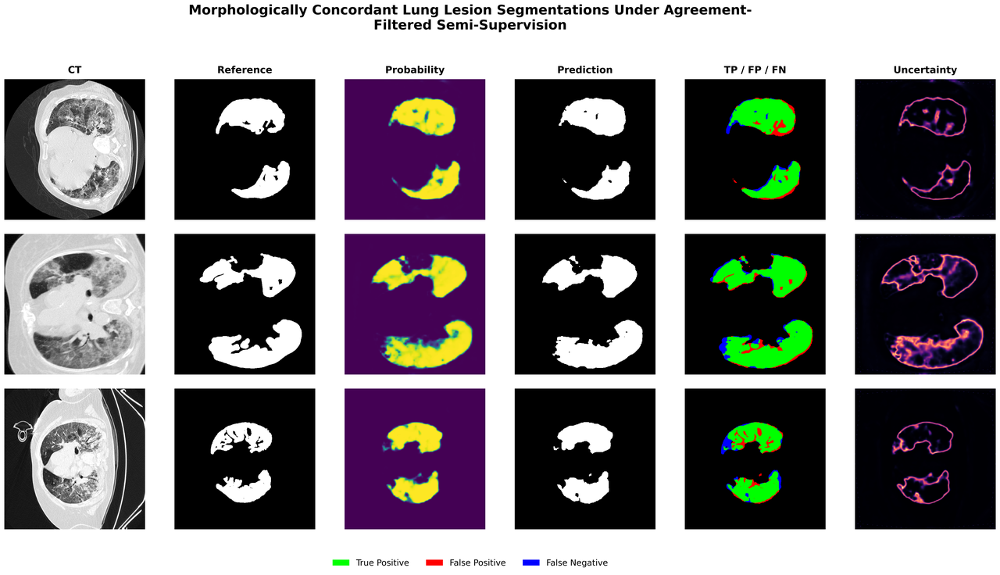
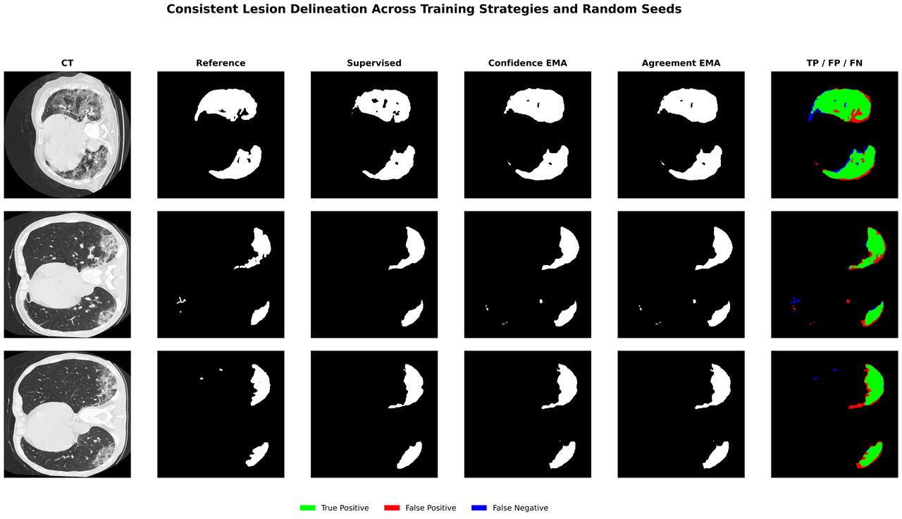
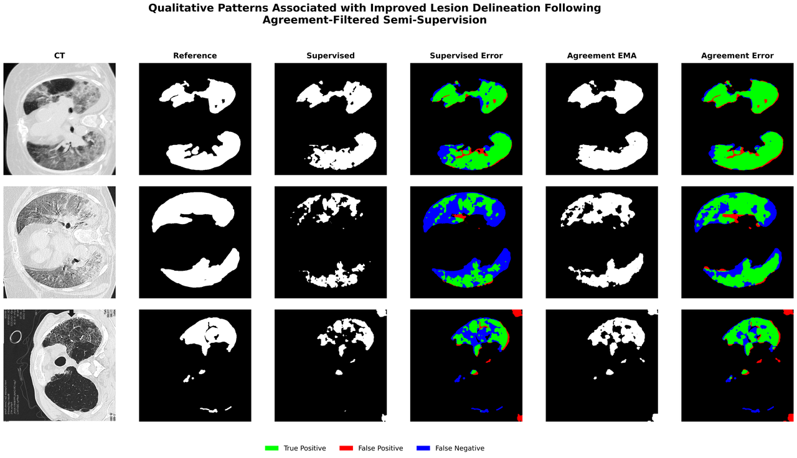
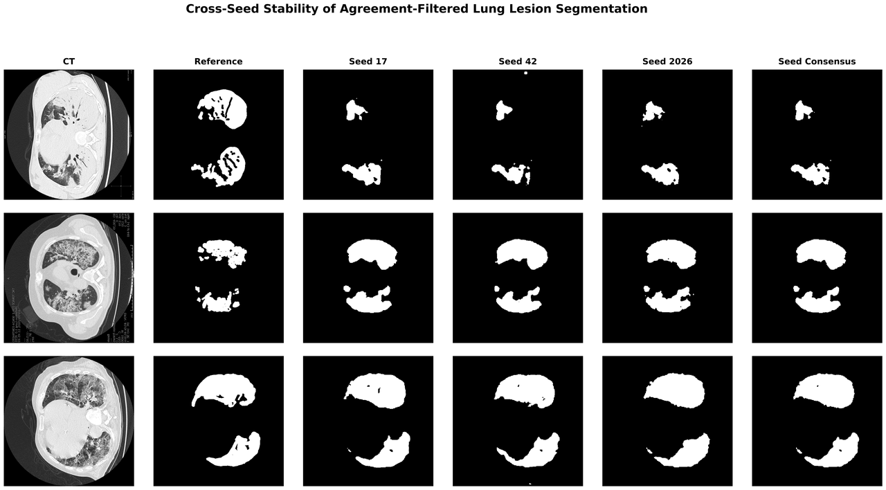
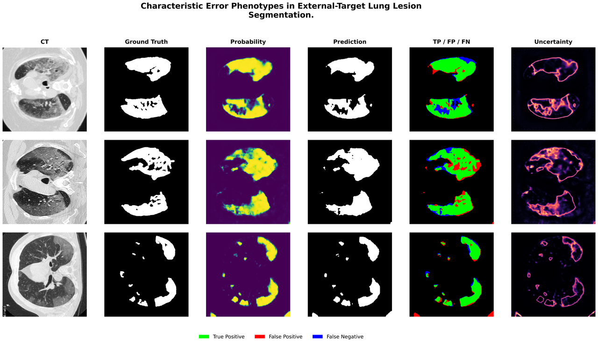
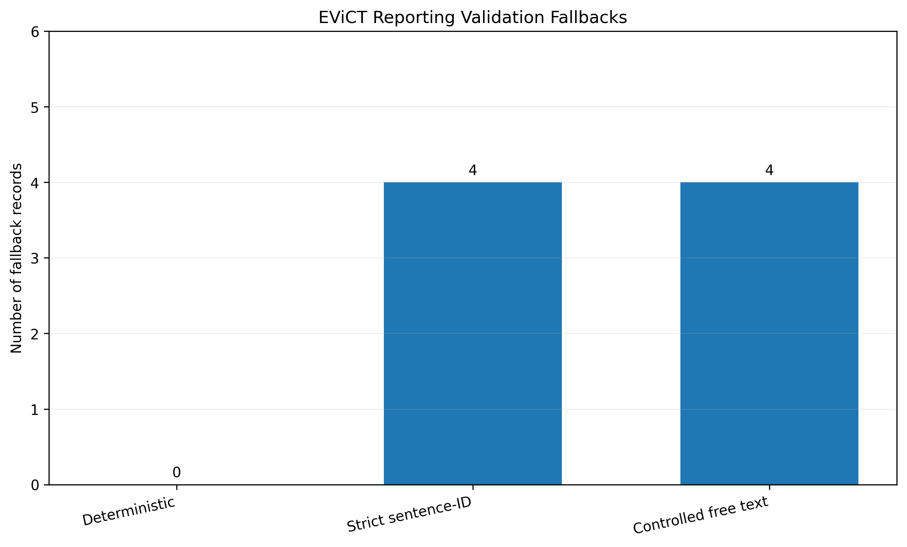

Submitted · IEEE Transactions on Biomedical Engineering (TBME)
EViCT.
From segmentation evidence to traceable chest CT reports.

The research
question.
How can visual evidence guide CT reporting while keeping generated statements and numerical values traceable?
Abstract / research summary
EViCT connects chest CT segmentation with evidence-grounded language reporting. Predicted opacity masks are converted into structured evidence records, and uncertainty supports selective reporting analysis. The study compares deterministic reports, constrained Qwen sentence-ID selection, and controlled free-text generation. Numerical integrity, explicit validation, and deterministic fallback govern the final output.
The completed core study evaluates segmentation and reporting as distinct components. Its report-validity measurements assess compliance with the evidence and reporting rules; they do not establish clinical diagnostic accuracy.
Inside the
method.
- 01
Learn visual segmentation evidence
Semantic conditioning and semi-supervised learning support opacity segmentation. The completed low-label experiment uses the repository’s b050 setting.
- 02
Construct structured evidence
Build report evidence from predictions without accessing the target reference masks. Keep evidence construction separate from independent evaluation.
- 03
Constrain language generation
Compare deterministic templates, Qwen sentence-ID selection with numerical rendering, and controlled free-text reporting.
- 04
Validate and apply fallback
Check report statements and protected numerical fields. Replace rejected generations with validated deterministic reports.
What the
results show.
Both Qwen reporting pathways directly accepted 896 of 900 records. Four records in each pathway required fallback. All three final reporting pathways passed the experiment’s validation rules for all 900 records.
| Reporting pathway | Direct acceptance | Fallback | Final valid reports |
|---|---|---|---|
| Deterministic | 900/900 (100%) | 0/900 | 900/900 |
| Strict sentence-ID Qwen | 896/900 (99.56%) | 4/900 | 900/900 |
| Controlled free-text Qwen | 896/900 (99.56%) | 4/900 | 900/900 |
These are report-validation outcomes from the frozen EViCT core experiment. The external segmentation evaluation uses 100 selected 2D MedSeg images. The repository does not report an independent clinical reader study for this experiment.
Research in view.
Explore CT segmentation comparisons, probability and uncertainty maps, cross-seed predictions, and challenging cases from EViCT’s corrected external-target analysis. Select any figure to enlarge it.
Comparing segmentation strategies
Selected examples from the corrected MedSeg external-target analysis. Green marks true positives, red false positives, and blue false negatives in the error panels.


View full figureThe same slices, three training strategies
Supervised, confidence-only EMA, and agreement-filtered EMA predictions are shown alongside the same CT slices, reference masks, and TP/FP/FN error overlays.
Source figure

View full figureAgreement between lesion shape and prediction
Post-evaluation descriptive examples show agreement-filtered predictions together with probability maps, reference masks, error overlays, and uncertainty.
Source figure

View full figureInspecting lesion delineation
Selected descriptive examples compare lesion outlines across supervised learning and both EMA strategies, with reference masks and error overlays for context.
Source figurePatterns, stability and failure modes
The visual analysis includes changes in lesion coverage, variation across random seeds, and challenging external-target cases.


View full figureHow the delineation changes
Repository-selected descriptive comparisons place supervised and agreement-filtered predictions beside their error maps, making changes in lesion coverage visible.
Source figure

View full figurePredictions across random seeds
Predictions from seeds 17, 42, and 2026 are shown with the seed consensus and reference masks. The examples allow visual inspection of both consistency and residual errors.
Source figure

View full figureWhere predictions diverge from the reference
Selected external-target cases combine probability maps, predicted masks, TP/FP/FN overlays, and uncertainty views to expose missed regions and excess predictions.
Source figureEvidence-grounded reporting
These quantitative figures complement the segmentation examples and summarize the separate, verified core reporting experiment.
Report acceptance and final validation
Direct acceptance and final validation across the deterministic, strict sentence-ID Qwen, and controlled free-text Qwen pathways in the verified EViCT core experiment.
Source figure

View full figureWhen fallback was needed
Each Qwen reporting pathway required deterministic fallback for four of 900 records. All final reports passed the experiment’s validation rules.
Source figureSegmentation figures follow the corrected Notebook-09 MedSeg analysis and include post-evaluation descriptive case selections. Reporting charts summarize the separate core reporting experiment. Read the qualitative study context ↗.
The complete
work.
EViCT — Evidence-Grounded Reporting
Submitted manuscript.
Submitted to: IEEE Transactions on Biomedical Engineering (TBME).
Methods, figures, and reporting results follow the verified EViCT reporting summary and its preserved reporting-arm results.